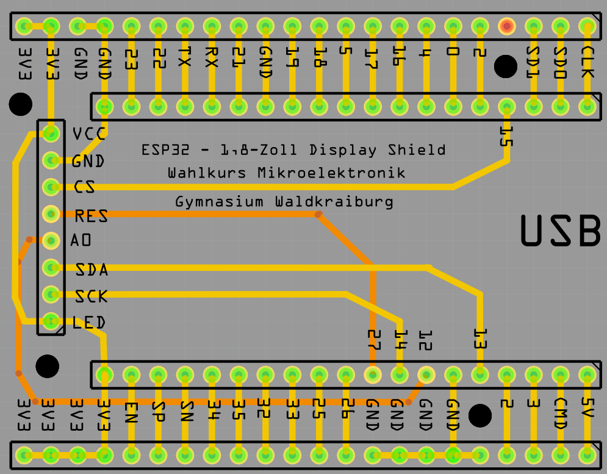

Das Display kann direkt auf unser Shield aufgesteckt werden:

Du kannst die Pins aber auch direkt mit Dupont-Kabeln verbinden.
Der Beispielsketch zählt die Zahlen von 0 bis 255 hoch:
#include <SPI.h>
#include <Adafruit_GFX.h> // Core graphics library
#include <Adafruit_ST7735.h> // Hardware-specific library for ST7735
// Das sind die Pins für den HSPI Kanal. Der TFT_RST kann beliebig gewählt werden.
#define TFT_CS 15
#define TFT_MOSI 13 //Der Pin ist auf dem Board mit SDA beschriftet
#define TFT_MISO 12 //Der Pin ist auf dem Board mit A0 beschriftet
#define TFT_RST 27 //Der Pin ist auf dem Board mit RESET beschriftet
#define TFT_CLK 14 //Der Pin ist auf dem Board mit SCK beschriftet
Adafruit_ST7735 tft = Adafruit_ST7735(TFT_CS, TFT_MISO, TFT_MOSI, TFT_CLK, TFT_RST);
void setup() {
Serial.begin(115200);
tft.initR(INITR_BLACKTAB); // den ST7735S Chip initialisieen, schwarz
tft.fillScreen(ST77XX_BLACK); // und den Schirm mit Schwarz füllen
tft.setTextWrap(false); // automatischen Zeilenumbruch ausschalten
tft.setTextSize(2); // Zeichengröße auf 2
tft.setRotation(1);
tft.setTextColor(ST77XX_GREEN, ST77XX_BLACK); // Grüne schrift auf schwarzem Hintergrund
tft.fillScreen(ST77XX_BLACK);
tft.setTextSize(8);
}
void loop() {
for (int zahl = 0; zahl < 255; zahl++) {
tft.setCursor(12, 35);
if (zahl < 10) tft.print(" ");
if (zahl < 100) tft.print(" ");
tft.print(zahl);
delay(1000);
}
}